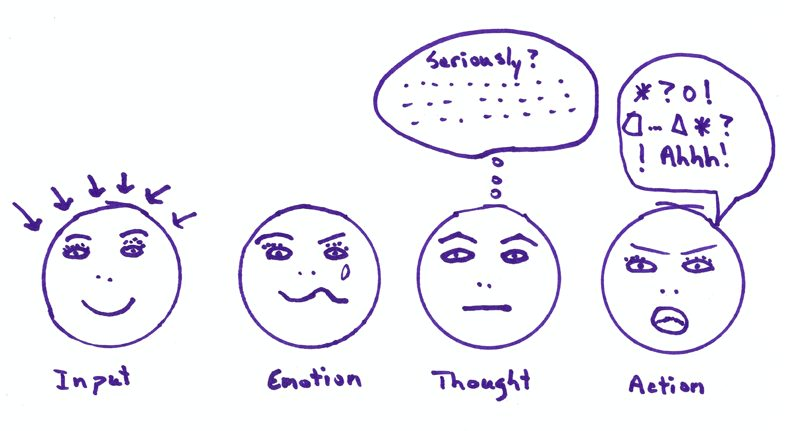
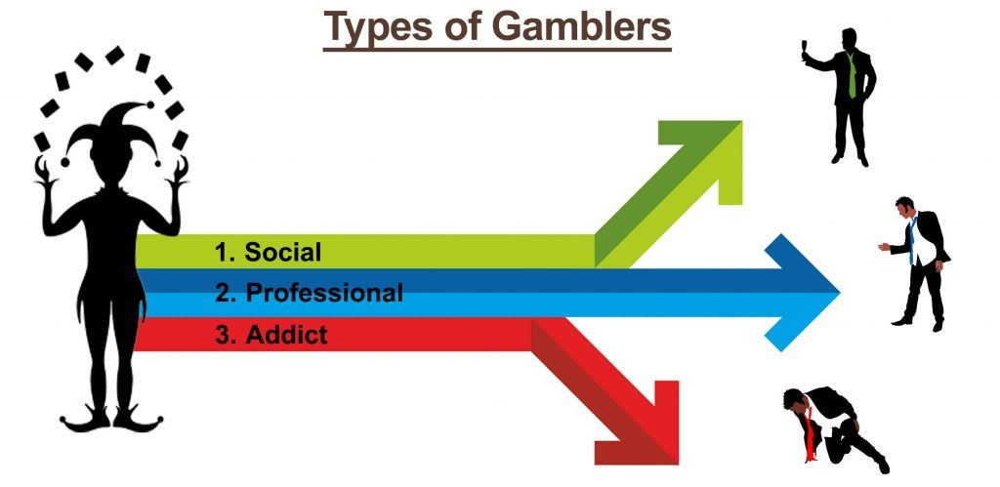
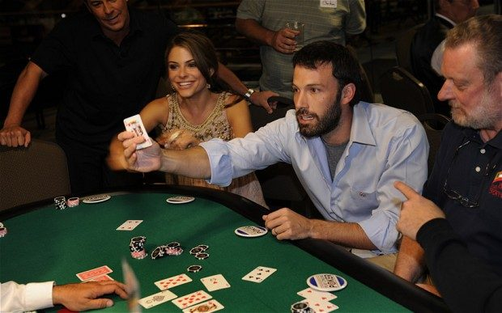
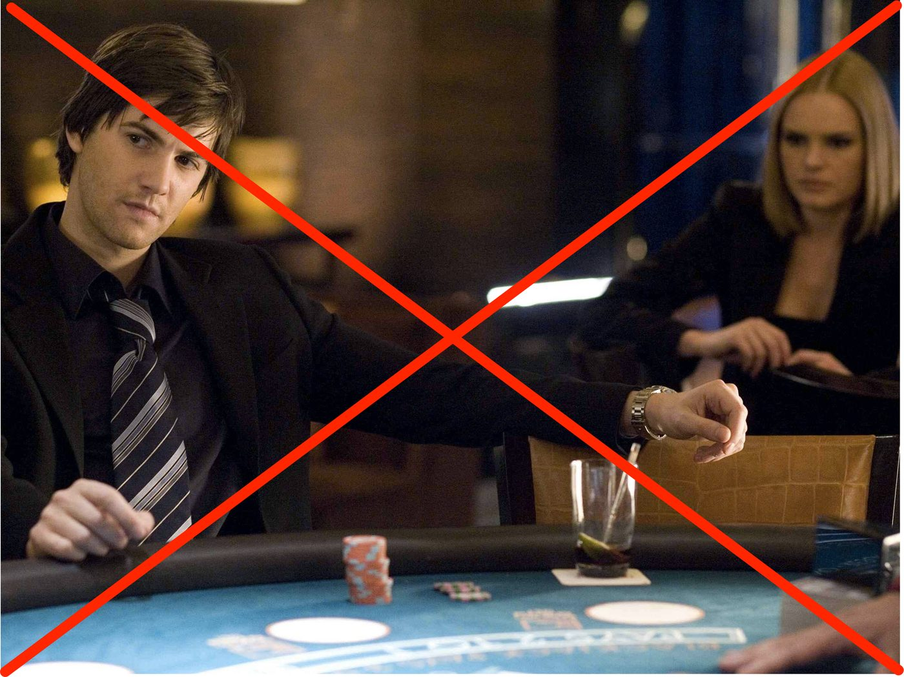

Poker Players
In a previous blog post I covered 8 lessons poker teaches you. What I didn't mention was that poker can be a great source of income; as opposed to problem gambling, which is over-all losing. If you're making the right decisions in poker consistently, you can expecting a positive return in the long run.
After you start playing you will start learning exactly why poker is different than other card games in the casino. A surface level reason is that other games in the casino are all versus the house. Common games that problem gamblers usually play will fit into category. Another reason poker can't be considered purely gambling is that it's a path of skill and disciplined. The infinitely deep diversity of that game guarantees you always have an area to work on, and a strategy to polish against eternally adapting players.
It is possible though for a poker player to go down the path of gambling if they enter the game with a gambling mentality - making careless decisions.
It's somewhat obvious that emotional decisions in poker are usually bad ones, i.e. -EV (negative expected value). Even if you get lucky with your knee-jerk reaction, negative long-term consequences are inevitable.

Your emotional reactions are a great indicator to find out if you’re a healthy minded poker player or not.
Problem Gambling
A gambling addiction is a psychological trap. It’s a negative mental state comparable to the worst forms of addiction.
But don’t stress, chances are you don’t possess this issue. Only 1% of the population has some form of gambling problem.
For those of you who gamble for fun and don’t have any resemblance of these characteristics, this won’t apply to you.

Models in the pathological gambling study suggest its also a compulsive disorder. Compulsive disorders can be defined as “inappropriate, typically excessive, and clearly disruptive" of the lives affected.
Both compulsive disorders and gambling disorders are commonly compared by psychologist to drug addicts their substance dependance.
Gambling addicts may also be using gambling in order to relieve stress. Oddly enough this stress usually comes from low self esteem, so they use gambling to escape from their feeling of inadequacy.
After losing in gambling, their low self esteem will strike back with vengeance, possibly leading them to chase their losses even harder.
On the poker table, these emotional decisions are disastrous (-EV). Equally bad as sitting on the Roulette or Blackjack table, hoping to win.
I think many could agree that Blackjack, Craps, Roulette, Baccarat are not super interesting games.. But the gambling addition is not for the games themselves, but for the behaviour and emotional state they provide.
And when there's money in the equation, it’s perfect recipe for an emotional roller coaster, temporarily distracting you from your life and intensifying the addiction.
A paper published revealed some of the most potent characteristics of problem gamblers, including:
- Excitement & escape.
- Loss & depression.
- Reliance on magical thinking.
- Failure to value or practice functional problem solving.
- Manipulative orientation towards others.
This is not just for casino gambling, the same applies for heavy lottery players. They show similar characteristics to casino addicts.
Even though "addicts coming into treatment do not fit the addictive disease conception of gambling behaviour”, Wedgeworth (1998). It’s still important to know that addicted gamblers differ from normal gamblers.
There's 2 types of gambling, and problem gamblers will fit into one of these categories:
- The first seeks to make more money out of there betting, these are called shallow play gamblers, this represents the majority of gamblers.
- The second is deep play gamblers, they’ve passed the stage of just trying to win money and now are actually betting primarily for excitement.
When players bet on sightly unfavourable outcomes (like red or black on Roulette), all their focus is the outcome. Not to mention, winning provides a massive high, feeding the addict's instant gratification.
The chance of doubling their money may delude them into thinking it's productive. Or that losing creates higher expectations to win the future rounds (also not true, as most know every outcome probability is independent).
Soon after, they’re probably going to be chasing their losses followed by more emotional reactions & decisions on future bets.

In gambling, winning or losing in the short-term is the same thing, because with the habit of gambling you’ll eventually lose everything you own.
On Quora someone asked “Is anyone making a living off Roulette”. The answer of course is no, players are guaranteed to lose over the long-term because of the house edge combined with the 3 Sigma rule (explained in more detail here).
Problems in life will always be there, and going to the casino definitely isn’t going to fix them.
Our brain can trick us into thinking gambling helps by giving us instant rewards when winning. But the only thing that really happens is: Life has temporarily become about ‘you' versus 'casino'.
Issues don’t dissolve inside this establishment, they magnify, and are definitely still going to be there after exiting.
Gambling can be self punishment for some people. They may feel they’re a victim or subconsciously deserve to lose all their savings.
There’s also cases where players believe they’re special or lucky. Like they're the ones who can win, but everyone knows feelings in gambling are unreliable.
Quitting Gambling When Addicted
Letting the addiction go mentally is the only way to quit. And the hard truth is, to truly beat the casino the only way is by not participating in it.
Friends, family, and your dog wishing you would stop won’t make any difference. They’re just telling you to stop gambling, not motivating you to do something else.
Relying just on will power doesn’t work, an outside activity or goal is needed. If there’s an external emotional factor that motivates you enough, you’ll quit.
Knowing what we’re doing is wrong, combined with a strong enough motivation factor is dynamite for eliminating habits that destructive.
Moreover, it's important for gamblers to understand the mathematics of each game, and why the casino always has the edge. This will be another reason to quit.

Card counting doesn’t work like the movie 21 anymore, because casinos continue to remove optimal card counting conditions (explanation of why card counting doesn’t work anymore
Even if players are card counting successfully, casinos can adjust table's rules whenever they please, and BOOM, it's losing game again.
Players addicted need to ask themselves “What am I really trying to get out of gambling?” A key step is educating yourself and becoming aware of how ridiculous it is, you’ll become certain that you’re only losing money.
The more logical reasons to quit, the easier it is to make the shift.
Not just because you are trying to stop, but because you realise how damn import other things are to you, and how the addiction is getting in the way of that.
Letting gambling control you will take away from things you care about most. If you become addicted to gambling, you’ll eventually waste time & money to an extent that it affects outside areas that are very important to you.
Final Note
Playing poker should not be seen as a problem in responsible players. The positives from playing the game far outweighs the negatives, especially with your buddies!